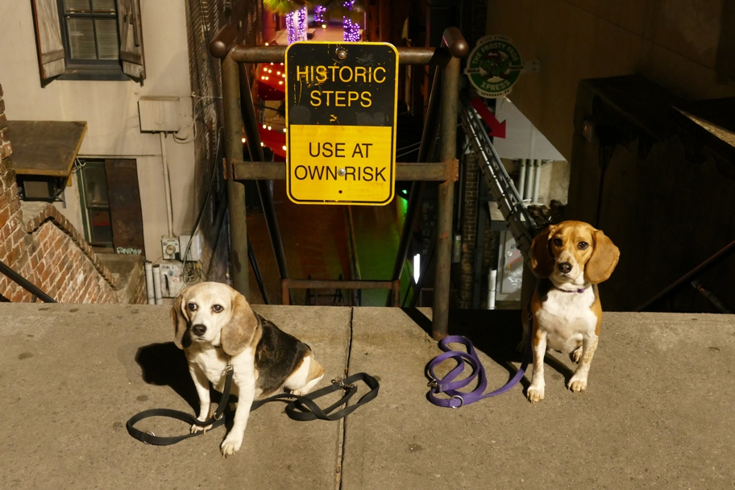

<--Previous Up Next-->

Savannah was built on a bluff next to the Savannah River. Steep steps connect the upper and lower parts. Iron bridges connect the backs of many buildings built below the bluff to the street above it.
Georgia Halley Beagle Savannah Wallace Beagle